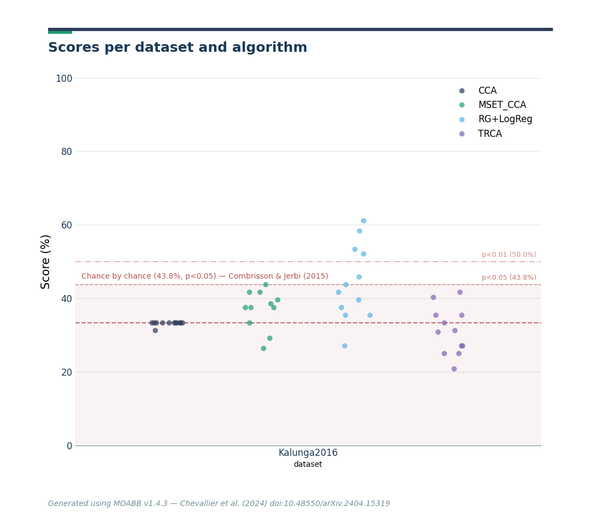

Note
Go to the end to download the full example code.
Cross-Subject SSVEP#
This example shows how to perform a cross-subject analysis on an SSVEP dataset. We will compare four pipelines :
Riemannian Geometry
CCA
TRCA
MsetCCA
We will use the SSVEP paradigm, which uses the AUC as metric.
# Authors: Sylvain Chevallier <sylvain.chevallier@uvsq.fr>
#
# License: BSD (3-clause)
import warnings
import matplotlib.pyplot as plt
import pandas as pd
from pyriemann.estimation import Covariances
from pyriemann.tangentspace import TangentSpace
from sklearn.linear_model import LogisticRegression
from sklearn.pipeline import make_pipeline
import moabb
import moabb.analysis.plotting as moabb_plt
from moabb.analysis.chance_level import chance_by_chance
from moabb.datasets import Kalunga2016
from moabb.evaluations import CrossSubjectEvaluation
from moabb.paradigms import SSVEP, FilterBankSSVEP
from moabb.pipelines import SSVEP_CCA, SSVEP_TRCA, ExtendedSSVEPSignal, SSVEP_MsetCCA
warnings.simplefilter(action="ignore", category=FutureWarning)
warnings.simplefilter(action="ignore", category=RuntimeWarning)
moabb.set_log_level("info")
Loading Dataset#
We will load the data from all 12 subjects of the SSVEP_Exo dataset
and compare four algorithms on this set. One of the algorithms could only
process class associated with a stimulation frequency, we will thus drop
the resting class. As the resting class is the last defined class, picking
the first three classes (out of four) allows to focus only on the stimulation
frequency.
Choose Paradigm#
We define the paradigms (SSVEP, SSVEP TRCA, SSVEP MsetCCA, and FilterBankSSVEP) and
use the dataset Kalunga2016. All 3 SSVEP paradigms applied a bandpass filter (10-42 Hz) on
the data, which include all stimuli frequencies and their first harmonics,
while the FilterBankSSVEP paradigm uses as many bandpass filters as
there are stimulation frequencies (here 3). For each stimulation frequency
the EEG is filtered with a 1 Hz-wide bandpass filter centered on the
frequency. This results in n_classes copies of the signal, filtered for each
class, as used in the filterbank motor imagery paradigms.
paradigm = SSVEP(fmin=10, fmax=42, n_classes=3)
paradigm_TRCA = SSVEP(fmin=10, fmax=42, n_classes=3)
paradigm_MSET_CCA = SSVEP(fmin=10, fmax=42, n_classes=3)
paradigm_fb = FilterBankSSVEP(filters=None, n_classes=3)
Classes are defined by the frequency of the stimulation, here we use the first three frequencies of the dataset, 13, 17, and 21 Hz. The evaluation function uses a LabelEncoder, transforming them to 0, 1, and 2.
Create Pipelines#
Pipelines must be a dict of sklearn pipeline transformer. The first pipeline uses Riemannian geometry, by building an extended covariance matrices from the signal filtered around the considered frequency and applying a logistic regression in the tangent plane. The second pipeline relies on the above defined CCA classifier. The third pipeline relies on the TRCA algorithm, and the fourth uses the MsetCCA algorithm. Both CCA based methods (i.e. CCA and MsetCCA) used 3 CCA components.
pipelines_fb = {}
pipelines_fb["RG+LogReg"] = make_pipeline(
ExtendedSSVEPSignal(),
Covariances(estimator="lwf"),
TangentSpace(),
LogisticRegression(solver="lbfgs"),
)
pipelines = {}
pipelines["CCA"] = make_pipeline(SSVEP_CCA(n_harmonics=2))
pipelines_TRCA = {}
pipelines_TRCA["TRCA"] = make_pipeline(SSVEP_TRCA(n_fbands=3))
pipelines_MSET_CCA = {}
pipelines_MSET_CCA["MSET_CCA"] = make_pipeline(SSVEP_MsetCCA())
Evaluation#
The evaluation will return a DataFrame containing an accuracy score for each subject / session of the dataset, and for each pipeline.
Results are saved into the database, so that if you add a new pipeline, it will not run again the evaluation unless a parameter has changed. Results can be overwritten if necessary.
overwrite = True # set to True if we want to overwrite cached results
evaluation = CrossSubjectEvaluation(
paradigm=paradigm, datasets=dataset, overwrite=overwrite
)
results = evaluation.process(pipelines)
/home/runner/work/moabb/moabb/.venv/lib/python3.10/site-packages/urllib3/connectionpool.py:1097: InsecureRequestWarning: Unverified HTTPS request is being made to host 'zenodo.org'. Adding certificate verification is strongly advised. See: https://urllib3.readthedocs.io/en/latest/advanced-usage.html#tls-warnings
warnings.warn(
/home/runner/work/moabb/moabb/.venv/lib/python3.10/site-packages/urllib3/connectionpool.py:1097: InsecureRequestWarning: Unverified HTTPS request is being made to host 'zenodo.org'. Adding certificate verification is strongly advised. See: https://urllib3.readthedocs.io/en/latest/advanced-usage.html#tls-warnings
warnings.warn(
0%| | 0.00/2.29M [00:00<?, ?B/s]
1%|▏ | 12.3k/2.29M [00:00<00:23, 96.9kB/s]
3%|█▎ | 77.8k/2.29M [00:00<00:06, 332kB/s]
6%|██▍ | 142k/2.29M [00:00<00:05, 383kB/s]
13%|█████▏ | 305k/2.29M [00:00<00:03, 602kB/s]
23%|████████▋ | 523k/2.29M [00:00<00:01, 1.01MB/s]
30%|███████████▊ | 697k/2.29M [00:00<00:01, 975kB/s]
41%|███████████████▌ | 943k/2.29M [00:01<00:01, 1.09MB/s]
51%|██████████████████▉ | 1.17M/2.29M [00:01<00:00, 1.13MB/s]
64%|███████████████████████▌ | 1.46M/2.29M [00:01<00:00, 1.49MB/s]
73%|██████████████████████████▊ | 1.66M/2.29M [00:01<00:00, 1.35MB/s]
87%|████████████████████████████████ | 1.99M/2.29M [00:01<00:00, 1.75MB/s]
95%|███████████████████████████████████▎ | 2.19M/2.29M [00:01<00:00, 1.50MB/s]
0%| | 0.00/2.29M [00:00<?, ?B/s]
100%|█████████████████████████████████████| 2.29M/2.29M [00:00<00:00, 12.5GB/s]
/home/runner/work/moabb/moabb/.venv/lib/python3.10/site-packages/urllib3/connectionpool.py:1097: InsecureRequestWarning: Unverified HTTPS request is being made to host 'zenodo.org'. Adding certificate verification is strongly advised. See: https://urllib3.readthedocs.io/en/latest/advanced-usage.html#tls-warnings
warnings.warn(
/home/runner/work/moabb/moabb/.venv/lib/python3.10/site-packages/urllib3/connectionpool.py:1097: InsecureRequestWarning: Unverified HTTPS request is being made to host 'zenodo.org'. Adding certificate verification is strongly advised. See: https://urllib3.readthedocs.io/en/latest/advanced-usage.html#tls-warnings
warnings.warn(
0%| | 0.00/2.06M [00:00<?, ?B/s]
1%|▏ | 12.3k/2.06M [00:00<00:24, 83.5kB/s]
2%|▋ | 39.9k/2.06M [00:00<00:11, 176kB/s]
5%|█▋ | 93.2k/2.06M [00:00<00:06, 313kB/s]
10%|███▉ | 207k/2.06M [00:00<00:03, 601kB/s]
21%|████████ | 434k/2.06M [00:00<00:01, 1.13MB/s]
43%|████████████████▍ | 892k/2.06M [00:00<00:00, 2.19MB/s]
77%|████████████████████████████▍ | 1.58M/2.06M [00:00<00:00, 3.58MB/s]
0%| | 0.00/2.06M [00:00<?, ?B/s]
100%|█████████████████████████████████████| 2.06M/2.06M [00:00<00:00, 17.4GB/s]
/home/runner/work/moabb/moabb/.venv/lib/python3.10/site-packages/urllib3/connectionpool.py:1097: InsecureRequestWarning: Unverified HTTPS request is being made to host 'zenodo.org'. Adding certificate verification is strongly advised. See: https://urllib3.readthedocs.io/en/latest/advanced-usage.html#tls-warnings
warnings.warn(
/home/runner/work/moabb/moabb/.venv/lib/python3.10/site-packages/urllib3/connectionpool.py:1097: InsecureRequestWarning: Unverified HTTPS request is being made to host 'zenodo.org'. Adding certificate verification is strongly advised. See: https://urllib3.readthedocs.io/en/latest/advanced-usage.html#tls-warnings
warnings.warn(
0%| | 0.00/2.12M [00:00<?, ?B/s]
0%| | 1.02k/2.12M [00:00<04:36, 7.67kB/s]
5%|█▋ | 96.3k/2.12M [00:00<00:05, 340kB/s]
11%|████▎ | 233k/2.12M [00:00<00:03, 527kB/s]
22%|████████▌ | 467k/2.12M [00:00<00:02, 815kB/s]
32%|████████████▋ | 689k/2.12M [00:00<00:01, 919kB/s]
39%|███████████████ | 820k/2.12M [00:01<00:01, 993kB/s]
50%|██████████████████▌ | 1.06M/2.12M [00:01<00:00, 1.09MB/s]
57%|█████████████████████▋ | 1.21M/2.12M [00:01<00:00, 965kB/s]
69%|█████████████████████████▍ | 1.46M/2.12M [00:01<00:00, 1.07MB/s]
83%|██████████████████████████████▊ | 1.77M/2.12M [00:01<00:00, 1.24MB/s]
93%|██████████████████████████████████▎ | 1.96M/2.12M [00:01<00:00, 1.18MB/s]
0%| | 0.00/2.12M [00:00<?, ?B/s]
100%|█████████████████████████████████████| 2.12M/2.12M [00:00<00:00, 7.65GB/s]
/home/runner/work/moabb/moabb/.venv/lib/python3.10/site-packages/urllib3/connectionpool.py:1097: InsecureRequestWarning: Unverified HTTPS request is being made to host 'zenodo.org'. Adding certificate verification is strongly advised. See: https://urllib3.readthedocs.io/en/latest/advanced-usage.html#tls-warnings
warnings.warn(
/home/runner/work/moabb/moabb/.venv/lib/python3.10/site-packages/urllib3/connectionpool.py:1097: InsecureRequestWarning: Unverified HTTPS request is being made to host 'zenodo.org'. Adding certificate verification is strongly advised. See: https://urllib3.readthedocs.io/en/latest/advanced-usage.html#tls-warnings
warnings.warn(
0%| | 0.00/2.47M [00:00<?, ?B/s]
0%| | 1.02k/2.47M [00:00<04:36, 8.94kB/s]
4%|█▍ | 93.2k/2.47M [00:00<00:05, 426kB/s]
6%|██▍ | 156k/2.47M [00:00<00:06, 379kB/s]
9%|███▍ | 221k/2.47M [00:00<00:04, 451kB/s]
11%|████▍ | 282k/2.47M [00:00<00:04, 496kB/s]
18%|██████▊ | 434k/2.47M [00:00<00:02, 795kB/s]
27%|██████████▍ | 663k/2.47M [00:00<00:01, 964kB/s]
34%|█████████████▎ | 843k/2.47M [00:01<00:01, 949kB/s]
49%|██████████████████▏ | 1.22M/2.47M [00:01<00:00, 1.30MB/s]
57%|█████████████████████▏ | 1.42M/2.47M [00:01<00:00, 1.20MB/s]
65%|████████████████████████ | 1.61M/2.47M [00:01<00:00, 1.13MB/s]
74%|███████████████████████████▌ | 1.84M/2.47M [00:01<00:00, 1.36MB/s]
80%|█████████████████████████████▊ | 1.99M/2.47M [00:02<00:00, 1.12MB/s]
87%|████████████████████████████████▏ | 2.15M/2.47M [00:02<00:00, 1.03MB/s]
97%|███████████████████████████████████▉ | 2.40M/2.47M [00:02<00:00, 1.32MB/s]
0%| | 0.00/2.47M [00:00<?, ?B/s]
100%|█████████████████████████████████████| 2.47M/2.47M [00:00<00:00, 14.6GB/s]
/home/runner/work/moabb/moabb/.venv/lib/python3.10/site-packages/urllib3/connectionpool.py:1097: InsecureRequestWarning: Unverified HTTPS request is being made to host 'zenodo.org'. Adding certificate verification is strongly advised. See: https://urllib3.readthedocs.io/en/latest/advanced-usage.html#tls-warnings
warnings.warn(
/home/runner/work/moabb/moabb/.venv/lib/python3.10/site-packages/urllib3/connectionpool.py:1097: InsecureRequestWarning: Unverified HTTPS request is being made to host 'zenodo.org'. Adding certificate verification is strongly advised. See: https://urllib3.readthedocs.io/en/latest/advanced-usage.html#tls-warnings
warnings.warn(
0%| | 0.00/2.71M [00:00<?, ?B/s]
0%|▏ | 12.3k/2.71M [00:00<00:27, 96.6kB/s]
1%|▌ | 37.9k/2.71M [00:00<00:15, 175kB/s]
4%|█▎ | 97.3k/2.71M [00:00<00:07, 344kB/s]
8%|███ | 210k/2.71M [00:00<00:04, 619kB/s]
16%|█████▉ | 428k/2.71M [00:00<00:02, 1.13MB/s]
33%|████████████▌ | 894k/2.71M [00:00<00:00, 2.23MB/s]
58%|█████████████████████▍ | 1.57M/2.71M [00:00<00:00, 3.62MB/s]
72%|██████████████████████████▍ | 1.94M/2.71M [00:00<00:00, 2.92MB/s]
83%|██████████████████████████████▊ | 2.26M/2.71M [00:01<00:00, 2.52MB/s]
93%|██████████████████████████████████▌ | 2.53M/2.71M [00:01<00:00, 1.95MB/s]
0%| | 0.00/2.71M [00:00<?, ?B/s]
100%|█████████████████████████████████████| 2.71M/2.71M [00:00<00:00, 10.8GB/s]
/home/runner/work/moabb/moabb/.venv/lib/python3.10/site-packages/urllib3/connectionpool.py:1097: InsecureRequestWarning: Unverified HTTPS request is being made to host 'zenodo.org'. Adding certificate verification is strongly advised. See: https://urllib3.readthedocs.io/en/latest/advanced-usage.html#tls-warnings
warnings.warn(
/home/runner/work/moabb/moabb/.venv/lib/python3.10/site-packages/urllib3/connectionpool.py:1097: InsecureRequestWarning: Unverified HTTPS request is being made to host 'zenodo.org'. Adding certificate verification is strongly advised. See: https://urllib3.readthedocs.io/en/latest/advanced-usage.html#tls-warnings
warnings.warn(
0%| | 0.00/2.33M [00:00<?, ?B/s]
1%|▏ | 12.3k/2.33M [00:00<00:23, 96.6kB/s]
4%|█▍ | 91.1k/2.33M [00:00<00:07, 306kB/s]
8%|███▏ | 190k/2.33M [00:00<00:03, 535kB/s]
13%|█████ | 300k/2.33M [00:00<00:03, 545kB/s]
20%|███████▋ | 457k/2.33M [00:00<00:02, 810kB/s]
25%|█████████▋ | 575k/2.33M [00:00<00:01, 912kB/s]
30%|███████████▋ | 696k/2.33M [00:00<00:01, 995kB/s]
35%|█████████████▏ | 805k/2.33M [00:01<00:01, 1.02MB/s]
39%|███████████████▎ | 913k/2.33M [00:01<00:01, 813kB/s]
45%|████████████████▉ | 1.04M/2.33M [00:01<00:01, 924kB/s]
52%|███████████████████▌ | 1.20M/2.33M [00:01<00:01, 875kB/s]
60%|██████████████████████▏ | 1.39M/2.33M [00:01<00:00, 1.12MB/s]
65%|████████████████████████▊ | 1.52M/2.33M [00:01<00:00, 931kB/s]
74%|███████████████████████████▎ | 1.72M/2.33M [00:01<00:00, 1.17MB/s]
80%|█████████████████████████████▋ | 1.87M/2.33M [00:02<00:00, 1.01MB/s]
85%|███████████████████████████████▌ | 1.99M/2.33M [00:02<00:00, 1.05MB/s]
94%|██████████████████████████████████▋ | 2.18M/2.33M [00:02<00:00, 1.02MB/s]
0%| | 0.00/2.33M [00:00<?, ?B/s]
100%|█████████████████████████████████████| 2.33M/2.33M [00:00<00:00, 10.9GB/s]
/home/runner/work/moabb/moabb/.venv/lib/python3.10/site-packages/urllib3/connectionpool.py:1097: InsecureRequestWarning: Unverified HTTPS request is being made to host 'zenodo.org'. Adding certificate verification is strongly advised. See: https://urllib3.readthedocs.io/en/latest/advanced-usage.html#tls-warnings
warnings.warn(
/home/runner/work/moabb/moabb/.venv/lib/python3.10/site-packages/urllib3/connectionpool.py:1097: InsecureRequestWarning: Unverified HTTPS request is being made to host 'zenodo.org'. Adding certificate verification is strongly advised. See: https://urllib3.readthedocs.io/en/latest/advanced-usage.html#tls-warnings
warnings.warn(
0%| | 0.00/2.27M [00:00<?, ?B/s]
0%|▏ | 9.22k/2.27M [00:00<00:27, 81.5kB/s]
4%|█▋ | 98.3k/2.27M [00:00<00:06, 357kB/s]
6%|██▌ | 146k/2.27M [00:00<00:05, 381kB/s]
10%|███▊ | 222k/2.27M [00:00<00:04, 502kB/s]
13%|█████▏ | 305k/2.27M [00:00<00:03, 599kB/s]
17%|██████▋ | 391k/2.27M [00:00<00:02, 667kB/s]
27%|██████████▋ | 620k/2.27M [00:00<00:01, 908kB/s]
35%|█████████████▋ | 800k/2.27M [00:01<00:01, 923kB/s]
44%|█████████████████ | 995k/2.27M [00:01<00:01, 963kB/s]
52%|███████████████████▋ | 1.18M/2.27M [00:01<00:01, 947kB/s]
66%|████████████████████████▍ | 1.50M/2.27M [00:01<00:00, 1.19MB/s]
71%|██████████████████████████▍ | 1.62M/2.27M [00:01<00:00, 1.18MB/s]
81%|█████████████████████████████▊ | 1.83M/2.27M [00:01<00:00, 1.16MB/s]
89%|█████████████████████████████████ | 2.03M/2.27M [00:02<00:00, 1.11MB/s]
94%|██████████████████████████████████▊ | 2.14M/2.27M [00:02<00:00, 1.05MB/s]
0%| | 0.00/2.27M [00:00<?, ?B/s]
100%|█████████████████████████████████████| 2.27M/2.27M [00:00<00:00, 13.3GB/s]
/home/runner/work/moabb/moabb/.venv/lib/python3.10/site-packages/urllib3/connectionpool.py:1097: InsecureRequestWarning: Unverified HTTPS request is being made to host 'zenodo.org'. Adding certificate verification is strongly advised. See: https://urllib3.readthedocs.io/en/latest/advanced-usage.html#tls-warnings
warnings.warn(
/home/runner/work/moabb/moabb/.venv/lib/python3.10/site-packages/urllib3/connectionpool.py:1097: InsecureRequestWarning: Unverified HTTPS request is being made to host 'zenodo.org'. Adding certificate verification is strongly advised. See: https://urllib3.readthedocs.io/en/latest/advanced-usage.html#tls-warnings
warnings.warn(
0%| | 0.00/1.99M [00:00<?, ?B/s]
1%|▏ | 12.3k/1.99M [00:00<00:18, 107kB/s]
5%|█▊ | 96.3k/1.99M [00:00<00:05, 334kB/s]
11%|████▎ | 221k/1.99M [00:00<00:03, 484kB/s]
18%|███████ | 358k/1.99M [00:00<00:02, 721kB/s]
23%|████████▉ | 459k/1.99M [00:00<00:01, 798kB/s]
30%|███████████▊ | 604k/1.99M [00:00<00:01, 984kB/s]
36%|█████████████▌ | 712k/1.99M [00:00<00:01, 1.01MB/s]
41%|███████████████▋ | 824k/1.99M [00:01<00:01, 1.04MB/s]
47%|██████████████████▎ | 934k/1.99M [00:01<00:01, 821kB/s]
52%|███████████████████▉ | 1.04M/1.99M [00:01<00:01, 884kB/s]
57%|█████████████████████▋ | 1.14M/1.99M [00:01<00:00, 901kB/s]
64%|███████████████████████▋ | 1.27M/1.99M [00:01<00:00, 1.02MB/s]
70%|██████████████████████████ | 1.40M/1.99M [00:01<00:00, 1.09MB/s]
76%|████████████████████████████▉ | 1.51M/1.99M [00:01<00:00, 867kB/s]
84%|██████████████████████████████▉ | 1.67M/1.99M [00:01<00:00, 1.02MB/s]
91%|██████████████████████████████████▋ | 1.82M/1.99M [00:02<00:00, 915kB/s]
98%|████████████████████████████████████▏| 1.95M/1.99M [00:02<00:00, 1.01MB/s]
0%| | 0.00/1.99M [00:00<?, ?B/s]
100%|█████████████████████████████████████| 1.99M/1.99M [00:00<00:00, 10.8GB/s]
/home/runner/work/moabb/moabb/.venv/lib/python3.10/site-packages/urllib3/connectionpool.py:1097: InsecureRequestWarning: Unverified HTTPS request is being made to host 'zenodo.org'. Adding certificate verification is strongly advised. See: https://urllib3.readthedocs.io/en/latest/advanced-usage.html#tls-warnings
warnings.warn(
/home/runner/work/moabb/moabb/.venv/lib/python3.10/site-packages/urllib3/connectionpool.py:1097: InsecureRequestWarning: Unverified HTTPS request is being made to host 'zenodo.org'. Adding certificate verification is strongly advised. See: https://urllib3.readthedocs.io/en/latest/advanced-usage.html#tls-warnings
warnings.warn(
0%| | 0.00/2.98M [00:00<?, ?B/s]
0%|▏ | 12.3k/2.98M [00:00<00:26, 113kB/s]
3%|▉ | 77.8k/2.98M [00:00<00:08, 351kB/s]
5%|█▊ | 138k/2.98M [00:00<00:07, 379kB/s]
11%|████▎ | 330k/2.98M [00:00<00:03, 679kB/s]
19%|███████▌ | 574k/2.98M [00:00<00:02, 887kB/s]
25%|█████████▊ | 754k/2.98M [00:00<00:02, 904kB/s]
32%|████████████ | 945k/2.98M [00:01<00:01, 1.12MB/s]
36%|█████████████▌ | 1.07M/2.98M [00:01<00:02, 944kB/s]
44%|████████████████▎ | 1.31M/2.98M [00:01<00:01, 1.06MB/s]
52%|███████████████████▎ | 1.56M/2.98M [00:01<00:01, 1.35MB/s]
57%|█████████████████████▎ | 1.71M/2.98M [00:01<00:01, 1.16MB/s]
63%|███████████████████████▎ | 1.88M/2.98M [00:01<00:01, 1.06MB/s]
67%|████████████████████████▊ | 2.00M/2.98M [00:02<00:00, 1.07MB/s]
75%|███████████████████████████▌ | 2.23M/2.98M [00:02<00:00, 1.11MB/s]
89%|████████████████████████████████▉ | 2.65M/2.98M [00:02<00:00, 1.48MB/s]
98%|████████████████████████████████████▏| 2.91M/2.98M [00:02<00:00, 1.71MB/s]
0%| | 0.00/2.98M [00:00<?, ?B/s]
100%|█████████████████████████████████████| 2.98M/2.98M [00:00<00:00, 12.2GB/s]
/home/runner/work/moabb/moabb/.venv/lib/python3.10/site-packages/urllib3/connectionpool.py:1097: InsecureRequestWarning: Unverified HTTPS request is being made to host 'zenodo.org'. Adding certificate verification is strongly advised. See: https://urllib3.readthedocs.io/en/latest/advanced-usage.html#tls-warnings
warnings.warn(
/home/runner/work/moabb/moabb/.venv/lib/python3.10/site-packages/urllib3/connectionpool.py:1097: InsecureRequestWarning: Unverified HTTPS request is being made to host 'zenodo.org'. Adding certificate verification is strongly advised. See: https://urllib3.readthedocs.io/en/latest/advanced-usage.html#tls-warnings
warnings.warn(
0%| | 0.00/2.72M [00:00<?, ?B/s]
0%|▏ | 10.2k/2.72M [00:00<00:50, 53.2kB/s]
1%|▌ | 39.9k/2.72M [00:00<00:17, 153kB/s]
4%|█▌ | 108k/2.72M [00:00<00:07, 342kB/s]
8%|███▏ | 221k/2.72M [00:00<00:04, 604kB/s]
13%|████▉ | 344k/2.72M [00:00<00:03, 668kB/s]
17%|██████▍ | 450k/2.72M [00:00<00:02, 763kB/s]
20%|███████▊ | 548k/2.72M [00:00<00:02, 808kB/s]
25%|█████████▊ | 682k/2.72M [00:00<00:02, 941kB/s]
29%|███████████▏ | 779k/2.72M [00:01<00:02, 934kB/s]
32%|████████████▌ | 879k/2.72M [00:01<00:01, 935kB/s]
37%|█████████████▊ | 1.01M/2.72M [00:01<00:01, 1.03MB/s]
42%|███████████████▋ | 1.15M/2.72M [00:01<00:01, 1.12MB/s]
47%|█████████████████▎ | 1.27M/2.72M [00:01<00:01, 1.10MB/s]
51%|██████████████████▊ | 1.38M/2.72M [00:01<00:01, 1.08MB/s]
55%|████████████████████▎ | 1.49M/2.72M [00:01<00:01, 1.06MB/s]
59%|█████████████████████▋ | 1.59M/2.72M [00:01<00:01, 1.05MB/s]
63%|███████████████████████▍ | 1.72M/2.72M [00:01<00:00, 1.10MB/s]
68%|█████████████████████████▏ | 1.85M/2.72M [00:02<00:00, 1.12MB/s]
72%|██████████████████████████▋ | 1.96M/2.72M [00:02<00:00, 1.10MB/s]
76%|████████████████████████████▏ | 2.07M/2.72M [00:02<00:00, 1.09MB/s]
80%|█████████████████████████████▋ | 2.18M/2.72M [00:02<00:00, 1.07MB/s]
84%|███████████████████████████████▉ | 2.29M/2.72M [00:02<00:00, 550kB/s]
87%|█████████████████████████████████▏ | 2.38M/2.72M [00:02<00:00, 602kB/s]
91%|██████████████████████████████████▍ | 2.46M/2.72M [00:03<00:00, 640kB/s]
96%|████████████████████████████████████▍ | 2.61M/2.72M [00:03<00:00, 809kB/s]
100%|█████████████████████████████████████▊| 2.70M/2.72M [00:03<00:00, 840kB/s]
0%| | 0.00/2.72M [00:00<?, ?B/s]
100%|█████████████████████████████████████| 2.72M/2.72M [00:00<00:00, 19.1GB/s]
/home/runner/work/moabb/moabb/.venv/lib/python3.10/site-packages/urllib3/connectionpool.py:1097: InsecureRequestWarning: Unverified HTTPS request is being made to host 'zenodo.org'. Adding certificate verification is strongly advised. See: https://urllib3.readthedocs.io/en/latest/advanced-usage.html#tls-warnings
warnings.warn(
/home/runner/work/moabb/moabb/.venv/lib/python3.10/site-packages/urllib3/connectionpool.py:1097: InsecureRequestWarning: Unverified HTTPS request is being made to host 'zenodo.org'. Adding certificate verification is strongly advised. See: https://urllib3.readthedocs.io/en/latest/advanced-usage.html#tls-warnings
warnings.warn(
0%| | 0.00/2.74M [00:00<?, ?B/s]
0%| | 1.02k/2.74M [00:00<06:57, 6.55kB/s]
4%|█▎ | 98.3k/2.74M [00:00<00:08, 320kB/s]
7%|██▋ | 189k/2.74M [00:00<00:05, 508kB/s]
12%|████▌ | 321k/2.74M [00:00<00:03, 759kB/s]
22%|████████▌ | 613k/2.74M [00:00<00:01, 1.43MB/s]
28%|██████████▊ | 775k/2.74M [00:00<00:01, 1.14MB/s]
36%|█████████████▌ | 974k/2.74M [00:00<00:01, 1.36MB/s]
43%|███████████████▊ | 1.17M/2.74M [00:01<00:01, 1.51MB/s]
49%|██████████████████ | 1.34M/2.74M [00:01<00:01, 1.23MB/s]
56%|████████████████████▋ | 1.53M/2.74M [00:01<00:00, 1.40MB/s]
62%|██████████████████████▊ | 1.69M/2.74M [00:01<00:00, 1.16MB/s]
68%|█████████████████████████▎ | 1.87M/2.74M [00:01<00:00, 1.07MB/s]
73%|██████████████████████████▉ | 1.99M/2.74M [00:01<00:00, 1.10MB/s]
80%|█████████████████████████████▋ | 2.20M/2.74M [00:01<00:00, 1.27MB/s]
85%|███████████████████████████████▌ | 2.34M/2.74M [00:02<00:00, 1.22MB/s]
90%|█████████████████████████████████▎ | 2.47M/2.74M [00:02<00:00, 1.23MB/s]
95%|███████████████████████████████████▏ | 2.61M/2.74M [00:02<00:00, 1.27MB/s]
100%|████████████████████████████████████▉| 2.74M/2.74M [00:02<00:00, 1.28MB/s]
0%| | 0.00/2.74M [00:00<?, ?B/s]
100%|█████████████████████████████████████| 2.74M/2.74M [00:00<00:00, 17.1GB/s]
/home/runner/work/moabb/moabb/.venv/lib/python3.10/site-packages/urllib3/connectionpool.py:1097: InsecureRequestWarning: Unverified HTTPS request is being made to host 'zenodo.org'. Adding certificate verification is strongly advised. See: https://urllib3.readthedocs.io/en/latest/advanced-usage.html#tls-warnings
warnings.warn(
/home/runner/work/moabb/moabb/.venv/lib/python3.10/site-packages/urllib3/connectionpool.py:1097: InsecureRequestWarning: Unverified HTTPS request is being made to host 'zenodo.org'. Adding certificate verification is strongly advised. See: https://urllib3.readthedocs.io/en/latest/advanced-usage.html#tls-warnings
warnings.warn(
0%| | 0.00/2.74M [00:00<?, ?B/s]
0%| | 1.02k/2.74M [00:00<38:54, 1.17kB/s]
0%|▏ | 11.3k/2.74M [00:00<02:57, 15.4kB/s]
1%|▌ | 37.9k/2.74M [00:01<00:47, 57.0kB/s]
3%|█▎ | 92.2k/2.74M [00:01<00:17, 149kB/s]
5%|██ | 141k/2.74M [00:01<00:11, 221kB/s]
8%|███ | 216k/2.74M [00:01<00:07, 337kB/s]
11%|████▎ | 299k/2.74M [00:01<00:05, 456kB/s]
14%|█████▋ | 395k/2.74M [00:01<00:04, 584kB/s]
17%|██████▊ | 476k/2.74M [00:01<00:03, 639kB/s]
20%|███████▉ | 558k/2.74M [00:01<00:03, 684kB/s]
23%|█████████ | 640k/2.74M [00:01<00:02, 718kB/s]
26%|██████████▎ | 722k/2.74M [00:02<00:02, 742kB/s]
29%|███████████▍ | 804k/2.74M [00:02<00:02, 760kB/s]
32%|████████████▋ | 886k/2.74M [00:02<00:02, 771kB/s]
35%|█████████████▊ | 967k/2.74M [00:02<00:02, 773kB/s]
38%|██████████████▌ | 1.05M/2.74M [00:02<00:02, 779kB/s]
41%|███████████████▋ | 1.13M/2.74M [00:02<00:02, 784kB/s]
45%|█████████████████ | 1.23M/2.74M [00:02<00:01, 834kB/s]
48%|██████████████████▏ | 1.31M/2.74M [00:02<00:01, 829kB/s]
53%|███████████████████▋ | 1.46M/2.74M [00:02<00:01, 1.00MB/s]
57%|█████████████████████▋ | 1.56M/2.74M [00:02<00:01, 993kB/s]
61%|███████████████████████ | 1.66M/2.74M [00:03<00:01, 990kB/s]
64%|████████████████████████▍ | 1.76M/2.74M [00:03<00:00, 982kB/s]
71%|██████████████████████████▏ | 1.93M/2.74M [00:03<00:00, 1.20MB/s]
75%|███████████████████████████▋ | 2.05M/2.74M [00:03<00:00, 1.19MB/s]
79%|█████████████████████████████▎ | 2.17M/2.74M [00:03<00:00, 1.18MB/s]
84%|██████████████████████████████▉ | 2.29M/2.74M [00:03<00:00, 1.18MB/s]
88%|████████████████████████████████▌ | 2.41M/2.74M [00:03<00:00, 1.17MB/s]
92%|██████████████████████████████████▏ | 2.52M/2.74M [00:03<00:00, 1.16MB/s]
97%|███████████████████████████████████▋ | 2.64M/2.74M [00:03<00:00, 1.15MB/s]
0%| | 0.00/2.74M [00:00<?, ?B/s]
100%|█████████████████████████████████████| 2.74M/2.74M [00:00<00:00, 24.4GB/s]
/home/runner/work/moabb/moabb/.venv/lib/python3.10/site-packages/urllib3/connectionpool.py:1097: InsecureRequestWarning: Unverified HTTPS request is being made to host 'zenodo.org'. Adding certificate verification is strongly advised. See: https://urllib3.readthedocs.io/en/latest/advanced-usage.html#tls-warnings
warnings.warn(
/home/runner/work/moabb/moabb/.venv/lib/python3.10/site-packages/urllib3/connectionpool.py:1097: InsecureRequestWarning: Unverified HTTPS request is being made to host 'zenodo.org'. Adding certificate verification is strongly advised. See: https://urllib3.readthedocs.io/en/latest/advanced-usage.html#tls-warnings
warnings.warn(
0%| | 0.00/2.73M [00:00<?, ?B/s]
0%| | 1.02k/2.73M [00:00<05:12, 8.72kB/s]
3%|█▏ | 81.9k/2.73M [00:00<00:07, 375kB/s]
5%|██ | 143k/2.73M [00:00<00:06, 394kB/s]
17%|██████▌ | 471k/2.73M [00:00<00:02, 1.03MB/s]
23%|████████▊ | 618k/2.73M [00:00<00:02, 925kB/s]
32%|████████████ | 863k/2.73M [00:00<00:01, 1.06MB/s]
41%|███████████████ | 1.11M/2.73M [00:01<00:01, 1.14MB/s]
50%|██████████████████▎ | 1.35M/2.73M [00:01<00:00, 1.40MB/s]
55%|████████████████████▍ | 1.51M/2.73M [00:01<00:00, 1.41MB/s]
61%|██████████████████████▌ | 1.67M/2.73M [00:01<00:00, 1.19MB/s]
66%|████████████████████████▎ | 1.79M/2.73M [00:01<00:00, 1.21MB/s]
71%|██████████████████████████▎ | 1.94M/2.73M [00:01<00:00, 1.05MB/s]
80%|█████████████████████████████▌ | 2.18M/2.73M [00:01<00:00, 1.35MB/s]
86%|███████████████████████████████▋ | 2.33M/2.73M [00:02<00:00, 1.14MB/s]
92%|██████████████████████████████████ | 2.51M/2.73M [00:02<00:00, 1.08MB/s]
0%| | 0.00/2.73M [00:00<?, ?B/s]
100%|█████████████████████████████████████| 2.73M/2.73M [00:00<00:00, 18.5GB/s]
/home/runner/work/moabb/moabb/.venv/lib/python3.10/site-packages/urllib3/connectionpool.py:1097: InsecureRequestWarning: Unverified HTTPS request is being made to host 'zenodo.org'. Adding certificate verification is strongly advised. See: https://urllib3.readthedocs.io/en/latest/advanced-usage.html#tls-warnings
warnings.warn(
/home/runner/work/moabb/moabb/.venv/lib/python3.10/site-packages/urllib3/connectionpool.py:1097: InsecureRequestWarning: Unverified HTTPS request is being made to host 'zenodo.org'. Adding certificate verification is strongly advised. See: https://urllib3.readthedocs.io/en/latest/advanced-usage.html#tls-warnings
warnings.warn(
0%| | 0.00/3.97M [00:00<?, ?B/s]
0%| | 1.02k/3.97M [00:00<07:29, 8.84kB/s]
1%|▍ | 41.0k/3.97M [00:00<00:17, 222kB/s]
3%|█▎ | 131k/3.97M [00:00<00:07, 519kB/s]
5%|██ | 208k/3.97M [00:00<00:06, 612kB/s]
11%|████▎ | 447k/3.97M [00:00<00:02, 1.24MB/s]
17%|██████▍ | 674k/3.97M [00:00<00:02, 1.58MB/s]
22%|████████▌ | 889k/3.97M [00:00<00:02, 1.36MB/s]
28%|██████████▎ | 1.11M/3.97M [00:00<00:01, 1.58MB/s]
35%|████████████▊ | 1.38M/3.97M [00:01<00:01, 1.88MB/s]
40%|██████████████▋ | 1.58M/3.97M [00:01<00:01, 1.90MB/s]
45%|████████████████▊ | 1.80M/3.97M [00:01<00:01, 1.59MB/s]
53%|███████████████████▌ | 2.10M/3.97M [00:01<00:00, 1.93MB/s]
58%|█████████████████████▌ | 2.32M/3.97M [00:01<00:01, 1.59MB/s]
66%|████████████████████████▍ | 2.62M/3.97M [00:01<00:00, 1.59MB/s]
76%|███████████████████████████▉ | 3.00M/3.97M [00:01<00:00, 2.05MB/s]
81%|██████████████████████████████▏ | 3.24M/3.97M [00:02<00:00, 1.74MB/s]
90%|█████████████████████████████████▍ | 3.59M/3.97M [00:02<00:00, 1.75MB/s]
97%|███████████████████████████████████▊ | 3.85M/3.97M [00:02<00:00, 1.61MB/s]
0%| | 0.00/3.97M [00:00<?, ?B/s]
100%|█████████████████████████████████████| 3.97M/3.97M [00:00<00:00, 24.0GB/s]
/home/runner/work/moabb/moabb/.venv/lib/python3.10/site-packages/urllib3/connectionpool.py:1097: InsecureRequestWarning: Unverified HTTPS request is being made to host 'zenodo.org'. Adding certificate verification is strongly advised. See: https://urllib3.readthedocs.io/en/latest/advanced-usage.html#tls-warnings
warnings.warn(
/home/runner/work/moabb/moabb/.venv/lib/python3.10/site-packages/urllib3/connectionpool.py:1097: InsecureRequestWarning: Unverified HTTPS request is being made to host 'zenodo.org'. Adding certificate verification is strongly advised. See: https://urllib3.readthedocs.io/en/latest/advanced-usage.html#tls-warnings
warnings.warn(
0%| | 0.00/2.72M [00:00<?, ?B/s]
0%|▏ | 12.3k/2.72M [00:00<00:29, 91.9kB/s]
3%|█▏ | 88.1k/2.72M [00:00<00:09, 292kB/s]
9%|███▍ | 244k/2.72M [00:00<00:04, 539kB/s]
14%|█████▎ | 370k/2.72M [00:00<00:03, 729kB/s]
20%|███████▋ | 540k/2.72M [00:00<00:02, 994kB/s]
24%|█████████▌ | 665k/2.72M [00:00<00:02, 836kB/s]
30%|███████████▌ | 811k/2.72M [00:01<00:01, 986kB/s]
35%|█████████████▏ | 945k/2.72M [00:01<00:01, 1.08MB/s]
40%|██████████████▊ | 1.09M/2.72M [00:01<00:01, 1.17MB/s]
45%|████████████████▌ | 1.22M/2.72M [00:01<00:01, 1.21MB/s]
52%|███████████████████▏ | 1.42M/2.72M [00:01<00:01, 1.12MB/s]
59%|█████████████████████▊ | 1.61M/2.72M [00:01<00:00, 1.32MB/s]
64%|███████████████████████▊ | 1.75M/2.72M [00:01<00:00, 1.08MB/s]
71%|██████████████████████████▎ | 1.94M/2.72M [00:01<00:00, 1.26MB/s]
76%|████████████████████████████▎ | 2.08M/2.72M [00:02<00:00, 1.05MB/s]
83%|██████████████████████████████▌ | 2.25M/2.72M [00:02<00:00, 1.20MB/s]
91%|█████████████████████████████████▋ | 2.48M/2.72M [00:02<00:00, 1.18MB/s]
97%|███████████████████████████████████▉ | 2.64M/2.72M [00:02<00:00, 1.28MB/s]
0%| | 0.00/2.72M [00:00<?, ?B/s]
100%|█████████████████████████████████████| 2.72M/2.72M [00:00<00:00, 14.4GB/s]
/home/runner/work/moabb/moabb/.venv/lib/python3.10/site-packages/urllib3/connectionpool.py:1097: InsecureRequestWarning: Unverified HTTPS request is being made to host 'zenodo.org'. Adding certificate verification is strongly advised. See: https://urllib3.readthedocs.io/en/latest/advanced-usage.html#tls-warnings
warnings.warn(
/home/runner/work/moabb/moabb/.venv/lib/python3.10/site-packages/urllib3/connectionpool.py:1097: InsecureRequestWarning: Unverified HTTPS request is being made to host 'zenodo.org'. Adding certificate verification is strongly advised. See: https://urllib3.readthedocs.io/en/latest/advanced-usage.html#tls-warnings
warnings.warn(
0%| | 0.00/2.82M [00:00<?, ?B/s]
0%| | 8.19k/2.82M [00:00<00:39, 70.7kB/s]
3%|█▏ | 90.1k/2.82M [00:00<00:08, 326kB/s]
8%|██▉ | 215k/2.82M [00:00<00:05, 492kB/s]
16%|██████▎ | 460k/2.82M [00:00<00:02, 819kB/s]
23%|█████████ | 656k/2.82M [00:00<00:02, 900kB/s]
31%|████████████ | 868k/2.82M [00:01<00:01, 976kB/s]
42%|███████████████▍ | 1.18M/2.82M [00:01<00:01, 1.19MB/s]
48%|█████████████████▌ | 1.34M/2.82M [00:01<00:01, 1.09MB/s]
54%|███████████████████▉ | 1.52M/2.82M [00:01<00:01, 1.04MB/s]
67%|████████████████████████▉ | 1.90M/2.82M [00:01<00:00, 1.56MB/s]
74%|███████████████████████████▍ | 2.09M/2.82M [00:01<00:00, 1.62MB/s]
81%|█████████████████████████████▊ | 2.27M/2.82M [00:02<00:00, 1.39MB/s]
89%|█████████████████████████████████ | 2.52M/2.82M [00:02<00:00, 1.36MB/s]
98%|████████████████████████████████████▎| 2.77M/2.82M [00:02<00:00, 1.34MB/s]
0%| | 0.00/2.82M [00:00<?, ?B/s]
100%|█████████████████████████████████████| 2.82M/2.82M [00:00<00:00, 17.8GB/s]
/home/runner/work/moabb/moabb/.venv/lib/python3.10/site-packages/urllib3/connectionpool.py:1097: InsecureRequestWarning: Unverified HTTPS request is being made to host 'zenodo.org'. Adding certificate verification is strongly advised. See: https://urllib3.readthedocs.io/en/latest/advanced-usage.html#tls-warnings
warnings.warn(
/home/runner/work/moabb/moabb/.venv/lib/python3.10/site-packages/urllib3/connectionpool.py:1097: InsecureRequestWarning: Unverified HTTPS request is being made to host 'zenodo.org'. Adding certificate verification is strongly advised. See: https://urllib3.readthedocs.io/en/latest/advanced-usage.html#tls-warnings
warnings.warn(
0%| | 0.00/2.77M [00:00<?, ?B/s]
0%|▏ | 12.3k/2.77M [00:00<00:26, 103kB/s]
1%|▌ | 39.9k/2.77M [00:00<00:14, 194kB/s]
5%|█▉ | 138k/2.77M [00:00<00:04, 535kB/s]
7%|██▋ | 195k/2.77M [00:00<00:05, 496kB/s]
11%|████▏ | 300k/2.77M [00:00<00:03, 679kB/s]
19%|███████▏ | 513k/2.77M [00:00<00:02, 875kB/s]
26%|█████████▋ | 709k/2.77M [00:00<00:01, 1.16MB/s]
31%|███████████▉ | 872k/2.77M [00:01<00:01, 1.02MB/s]
42%|███████████████▌ | 1.17M/2.77M [00:01<00:01, 1.48MB/s]
49%|█████████████████▉ | 1.35M/2.77M [00:01<00:01, 1.26MB/s]
54%|███████████████████▉ | 1.49M/2.77M [00:01<00:01, 1.28MB/s]
59%|█████████████████████▊ | 1.63M/2.77M [00:01<00:00, 1.30MB/s]
64%|████████████████████████▎ | 1.77M/2.77M [00:01<00:01, 988kB/s]
69%|██████████████████████████ | 1.90M/2.77M [00:01<00:00, 878kB/s]
82%|██████████████████████████████▍ | 2.28M/2.77M [00:02<00:00, 1.46MB/s]
89%|████████████████████████████████▉ | 2.46M/2.77M [00:02<00:00, 1.28MB/s]
95%|██████████████████████████████████▉ | 2.62M/2.77M [00:02<00:00, 1.33MB/s]
0%| | 0.00/2.77M [00:00<?, ?B/s]
100%|█████████████████████████████████████| 2.77M/2.77M [00:00<00:00, 12.0GB/s]
/home/runner/work/moabb/moabb/.venv/lib/python3.10/site-packages/urllib3/connectionpool.py:1097: InsecureRequestWarning: Unverified HTTPS request is being made to host 'zenodo.org'. Adding certificate verification is strongly advised. See: https://urllib3.readthedocs.io/en/latest/advanced-usage.html#tls-warnings
warnings.warn(
/home/runner/work/moabb/moabb/.venv/lib/python3.10/site-packages/urllib3/connectionpool.py:1097: InsecureRequestWarning: Unverified HTTPS request is being made to host 'zenodo.org'. Adding certificate verification is strongly advised. See: https://urllib3.readthedocs.io/en/latest/advanced-usage.html#tls-warnings
warnings.warn(
0%| | 0.00/2.72M [00:00<?, ?B/s]
0%|▏ | 11.3k/2.72M [00:00<00:31, 85.2kB/s]
3%|█ | 79.9k/2.72M [00:00<00:07, 336kB/s]
5%|█▊ | 127k/2.72M [00:00<00:07, 327kB/s]
10%|███▉ | 272k/2.72M [00:00<00:04, 530kB/s]
18%|██████▉ | 485k/2.72M [00:00<00:02, 764kB/s]
26%|██████████▎ | 715k/2.72M [00:00<00:02, 924kB/s]
33%|█████████████ | 910k/2.72M [00:01<00:01, 959kB/s]
43%|███████████████▉ | 1.17M/2.72M [00:01<00:01, 1.10MB/s]
50%|██████████████████▍ | 1.35M/2.72M [00:01<00:01, 1.03MB/s]
58%|█████████████████████▌ | 1.58M/2.72M [00:01<00:01, 1.09MB/s]
67%|████████████████████████▋ | 1.81M/2.72M [00:01<00:00, 1.32MB/s]
74%|███████████████████████████▌ | 2.02M/2.72M [00:02<00:00, 1.25MB/s]
82%|██████████████████████████████▏ | 2.22M/2.72M [00:02<00:00, 1.18MB/s]
89%|████████████████████████████████▊ | 2.41M/2.72M [00:02<00:00, 1.13MB/s]
0%| | 0.00/2.72M [00:00<?, ?B/s]
100%|█████████████████████████████████████| 2.72M/2.72M [00:00<00:00, 12.8GB/s]
/home/runner/work/moabb/moabb/.venv/lib/python3.10/site-packages/urllib3/connectionpool.py:1097: InsecureRequestWarning: Unverified HTTPS request is being made to host 'zenodo.org'. Adding certificate verification is strongly advised. See: https://urllib3.readthedocs.io/en/latest/advanced-usage.html#tls-warnings
warnings.warn(
/home/runner/work/moabb/moabb/.venv/lib/python3.10/site-packages/urllib3/connectionpool.py:1097: InsecureRequestWarning: Unverified HTTPS request is being made to host 'zenodo.org'. Adding certificate verification is strongly advised. See: https://urllib3.readthedocs.io/en/latest/advanced-usage.html#tls-warnings
warnings.warn(
0%| | 0.00/2.75M [00:00<?, ?B/s]
0%|▏ | 13.3k/2.75M [00:00<00:23, 117kB/s]
3%|█ | 78.8k/2.75M [00:00<00:07, 346kB/s]
6%|██▏ | 156k/2.75M [00:00<00:06, 426kB/s]
11%|████▎ | 305k/2.75M [00:00<00:04, 591kB/s]
16%|██████▍ | 453k/2.75M [00:00<00:02, 821kB/s]
20%|███████▋ | 542k/2.75M [00:00<00:02, 830kB/s]
30%|███████████▍ | 831k/2.75M [00:00<00:01, 1.11MB/s]
39%|██████████████▎ | 1.06M/2.75M [00:01<00:01, 1.14MB/s]
47%|█████████████████▌ | 1.31M/2.75M [00:01<00:01, 1.18MB/s]
56%|████████████████████▋ | 1.53M/2.75M [00:01<00:01, 1.18MB/s]
63%|███████████████████████▎ | 1.73M/2.75M [00:01<00:00, 1.34MB/s]
68%|█████████████████████████▏ | 1.87M/2.75M [00:01<00:00, 1.32MB/s]
75%|███████████████████████████▋ | 2.06M/2.75M [00:01<00:00, 1.18MB/s]
82%|██████████████████████████████▌ | 2.27M/2.75M [00:02<00:00, 1.15MB/s]
91%|█████████████████████████████████▊ | 2.52M/2.75M [00:02<00:00, 1.19MB/s]
0%| | 0.00/2.75M [00:00<?, ?B/s]
100%|█████████████████████████████████████| 2.75M/2.75M [00:00<00:00, 14.9GB/s]
/home/runner/work/moabb/moabb/.venv/lib/python3.10/site-packages/urllib3/connectionpool.py:1097: InsecureRequestWarning: Unverified HTTPS request is being made to host 'zenodo.org'. Adding certificate verification is strongly advised. See: https://urllib3.readthedocs.io/en/latest/advanced-usage.html#tls-warnings
warnings.warn(
/home/runner/work/moabb/moabb/.venv/lib/python3.10/site-packages/urllib3/connectionpool.py:1097: InsecureRequestWarning: Unverified HTTPS request is being made to host 'zenodo.org'. Adding certificate verification is strongly advised. See: https://urllib3.readthedocs.io/en/latest/advanced-usage.html#tls-warnings
warnings.warn(
0%| | 0.00/3.26M [00:00<?, ?B/s]
0%| | 1.02k/3.26M [00:00<05:26, 10.0kB/s]
3%|▉ | 81.9k/3.26M [00:00<00:08, 395kB/s]
5%|█▊ | 147k/3.26M [00:00<00:07, 418kB/s]
11%|████▎ | 360k/3.26M [00:00<00:03, 755kB/s]
14%|█████▍ | 459k/3.26M [00:00<00:03, 812kB/s]
19%|███████▍ | 622k/3.26M [00:00<00:03, 825kB/s]
27%|██████████ | 867k/3.26M [00:01<00:02, 1.00MB/s]
33%|████████████ | 1.06M/3.26M [00:01<00:02, 1.01MB/s]
43%|███████████████▉ | 1.41M/3.26M [00:01<00:01, 1.28MB/s]
49%|██████████████████▏ | 1.60M/3.26M [00:01<00:01, 1.20MB/s]
53%|███████████████████▋ | 1.73M/3.26M [00:01<00:01, 1.22MB/s]
59%|█████████████████████▋ | 1.91M/3.26M [00:01<00:01, 1.11MB/s]
65%|███████████████████████▉ | 2.11M/3.26M [00:02<00:01, 1.08MB/s]
72%|██████████████████████████▋ | 2.36M/3.26M [00:02<00:00, 1.15MB/s]
79%|█████████████████████████████▎ | 2.58M/3.26M [00:02<00:00, 1.16MB/s]
87%|████████████████████████████████ | 2.83M/3.26M [00:02<00:00, 1.40MB/s]
94%|██████████████████████████████████▋ | 3.06M/3.26M [00:02<00:00, 1.34MB/s]
99%|████████████████████████████████████▋| 3.24M/3.26M [00:02<00:00, 1.21MB/s]
0%| | 0.00/3.26M [00:00<?, ?B/s]
100%|█████████████████████████████████████| 3.26M/3.26M [00:00<00:00, 27.6GB/s]
/home/runner/work/moabb/moabb/.venv/lib/python3.10/site-packages/urllib3/connectionpool.py:1097: InsecureRequestWarning: Unverified HTTPS request is being made to host 'zenodo.org'. Adding certificate verification is strongly advised. See: https://urllib3.readthedocs.io/en/latest/advanced-usage.html#tls-warnings
warnings.warn(
/home/runner/work/moabb/moabb/.venv/lib/python3.10/site-packages/urllib3/connectionpool.py:1097: InsecureRequestWarning: Unverified HTTPS request is being made to host 'zenodo.org'. Adding certificate verification is strongly advised. See: https://urllib3.readthedocs.io/en/latest/advanced-usage.html#tls-warnings
warnings.warn(
0%| | 0.00/3.33M [00:00<?, ?B/s]
0%|▏ | 11.3k/3.33M [00:00<00:30, 109kB/s]
1%|▍ | 37.9k/3.33M [00:00<00:17, 193kB/s]
3%|█ | 92.2k/3.33M [00:00<00:09, 339kB/s]
4%|█▋ | 141k/3.33M [00:00<00:09, 350kB/s]
8%|███▏ | 270k/3.33M [00:00<00:04, 639kB/s]
12%|████▍ | 384k/3.33M [00:00<00:03, 780kB/s]
16%|██████▏ | 531k/3.33M [00:00<00:02, 972kB/s]
19%|███████▍ | 631k/3.33M [00:00<00:02, 958kB/s]
22%|████████▌ | 728k/3.33M [00:00<00:02, 942kB/s]
25%|█████████▋ | 825k/3.33M [00:01<00:02, 933kB/s]
28%|███████████ | 940k/3.33M [00:01<00:02, 976kB/s]
32%|███████████▋ | 1.05M/3.33M [00:01<00:02, 1.01MB/s]
36%|█████████████▎ | 1.20M/3.33M [00:01<00:01, 1.12MB/s]
40%|██████████████▊ | 1.33M/3.33M [00:01<00:01, 1.15MB/s]
53%|███████████████████▌ | 1.76M/3.33M [00:01<00:00, 2.00MB/s]
72%|██████████████████████████▋ | 2.40M/3.33M [00:01<00:00, 3.21MB/s]
0%| | 0.00/3.33M [00:00<?, ?B/s]
100%|█████████████████████████████████████| 3.33M/3.33M [00:00<00:00, 27.4GB/s]
/home/runner/work/moabb/moabb/.venv/lib/python3.10/site-packages/urllib3/connectionpool.py:1097: InsecureRequestWarning: Unverified HTTPS request is being made to host 'zenodo.org'. Adding certificate verification is strongly advised. See: https://urllib3.readthedocs.io/en/latest/advanced-usage.html#tls-warnings
warnings.warn(
/home/runner/work/moabb/moabb/.venv/lib/python3.10/site-packages/urllib3/connectionpool.py:1097: InsecureRequestWarning: Unverified HTTPS request is being made to host 'zenodo.org'. Adding certificate verification is strongly advised. See: https://urllib3.readthedocs.io/en/latest/advanced-usage.html#tls-warnings
warnings.warn(
0%| | 0.00/3.23M [00:00<?, ?B/s]
0%| | 1.02k/3.23M [00:00<07:12, 7.46kB/s]
1%|▍ | 41.0k/3.23M [00:00<00:15, 205kB/s]
3%|█ | 91.1k/3.23M [00:00<00:09, 325kB/s]
6%|██▌ | 210k/3.23M [00:00<00:04, 642kB/s]
14%|█████▏ | 437k/3.23M [00:00<00:02, 1.19MB/s]
28%|██████████▌ | 895k/3.23M [00:00<00:01, 2.29MB/s]
56%|████████████████████▌ | 1.79M/3.23M [00:00<00:00, 4.37MB/s]
0%| | 0.00/3.23M [00:00<?, ?B/s]
100%|█████████████████████████████████████| 3.23M/3.23M [00:00<00:00, 26.2GB/s]
/home/runner/work/moabb/moabb/.venv/lib/python3.10/site-packages/urllib3/connectionpool.py:1097: InsecureRequestWarning: Unverified HTTPS request is being made to host 'zenodo.org'. Adding certificate verification is strongly advised. See: https://urllib3.readthedocs.io/en/latest/advanced-usage.html#tls-warnings
warnings.warn(
/home/runner/work/moabb/moabb/.venv/lib/python3.10/site-packages/urllib3/connectionpool.py:1097: InsecureRequestWarning: Unverified HTTPS request is being made to host 'zenodo.org'. Adding certificate verification is strongly advised. See: https://urllib3.readthedocs.io/en/latest/advanced-usage.html#tls-warnings
warnings.warn(
0%| | 0.00/6.92M [00:00<?, ?B/s]
0%| | 12.3k/6.92M [00:00<01:08, 101kB/s]
1%|▏ | 39.9k/6.92M [00:00<00:35, 193kB/s]
1%|▌ | 93.2k/6.92M [00:00<00:20, 334kB/s]
3%|█▏ | 202k/6.92M [00:00<00:11, 606kB/s]
6%|██▍ | 434k/6.92M [00:00<00:05, 1.19MB/s]
13%|████▉ | 892k/6.92M [00:00<00:02, 2.27MB/s]
26%|█████████▋ | 1.81M/6.92M [00:00<00:01, 4.41MB/s]
52%|███████████████████▎ | 3.62M/6.92M [00:00<00:00, 8.56MB/s]
98%|████████████████████████████████████▍| 6.81M/6.92M [00:00<00:00, 15.4MB/s]
0%| | 0.00/6.92M [00:00<?, ?B/s]
100%|█████████████████████████████████████| 6.92M/6.92M [00:00<00:00, 55.4GB/s]
/home/runner/work/moabb/moabb/.venv/lib/python3.10/site-packages/urllib3/connectionpool.py:1097: InsecureRequestWarning: Unverified HTTPS request is being made to host 'zenodo.org'. Adding certificate verification is strongly advised. See: https://urllib3.readthedocs.io/en/latest/advanced-usage.html#tls-warnings
warnings.warn(
/home/runner/work/moabb/moabb/.venv/lib/python3.10/site-packages/urllib3/connectionpool.py:1097: InsecureRequestWarning: Unverified HTTPS request is being made to host 'zenodo.org'. Adding certificate verification is strongly advised. See: https://urllib3.readthedocs.io/en/latest/advanced-usage.html#tls-warnings
warnings.warn(
0%| | 0.00/5.35M [00:00<?, ?B/s]
0%| | 1.02k/5.35M [00:00<14:38, 6.09kB/s]
2%|▌ | 81.9k/5.35M [00:00<00:15, 348kB/s]
4%|█▎ | 187k/5.35M [00:00<00:08, 616kB/s]
6%|██▍ | 328k/5.35M [00:00<00:07, 665kB/s]
9%|███▋ | 508k/5.35M [00:00<00:06, 773kB/s]
12%|████▋ | 641k/5.35M [00:00<00:05, 905kB/s]
16%|██████ | 835k/5.35M [00:01<00:04, 935kB/s]
17%|██████▊ | 933k/5.35M [00:01<00:04, 939kB/s]
22%|████████▏ | 1.19M/5.35M [00:01<00:03, 1.33MB/s]
25%|█████████▏ | 1.33M/5.35M [00:01<00:03, 1.09MB/s]
27%|██████████ | 1.46M/5.35M [00:01<00:03, 1.12MB/s]
31%|███████████▌ | 1.67M/5.35M [00:01<00:03, 1.10MB/s]
34%|████████████▋ | 1.84M/5.35M [00:01<00:02, 1.24MB/s]
38%|█████████████▉ | 2.01M/5.35M [00:02<00:03, 1.10MB/s]
41%|███████████████▎ | 2.21M/5.35M [00:02<00:02, 1.07MB/s]
46%|████████████████▉ | 2.45M/5.35M [00:02<00:02, 1.35MB/s]
49%|██████████████████▎ | 2.64M/5.35M [00:02<00:01, 1.47MB/s]
54%|███████████████████▉ | 2.88M/5.35M [00:02<00:01, 1.38MB/s]
57%|████████████████████▉ | 3.03M/5.35M [00:02<00:01, 1.40MB/s]
60%|██████████████████████▎ | 3.23M/5.35M [00:02<00:01, 1.54MB/s]
63%|███████████████████████▍ | 3.40M/5.35M [00:02<00:01, 1.51MB/s]
66%|████████████████████████▌ | 3.56M/5.35M [00:03<00:01, 1.22MB/s]
69%|█████████████████████████▌ | 3.69M/5.35M [00:03<00:01, 1.18MB/s]
74%|███████████████████████████▎ | 3.94M/5.35M [00:03<00:00, 1.45MB/s]
78%|████████████████████████████▋ | 4.15M/5.35M [00:03<00:00, 1.62MB/s]
81%|█████████████████████████████▉ | 4.33M/5.35M [00:03<00:00, 1.32MB/s]
84%|██████████████████████████████▉ | 4.47M/5.35M [00:03<00:00, 1.11MB/s]
87%|████████████████████████████████▎ | 4.68M/5.35M [00:04<00:00, 1.09MB/s]
91%|█████████████████████████████████▌ | 4.86M/5.35M [00:04<00:00, 1.23MB/s]
93%|██████████████████████████████████▌ | 5.00M/5.35M [00:04<00:00, 1.04MB/s]
96%|███████████████████████████████████▍ | 5.12M/5.35M [00:04<00:00, 1.06MB/s]
98%|████████████████████████████████████▏| 5.24M/5.35M [00:04<00:00, 1.09MB/s]
0%| | 0.00/5.35M [00:00<?, ?B/s]
100%|█████████████████████████████████████| 5.35M/5.35M [00:00<00:00, 38.0GB/s]
Kalunga2016-CrossSubject: 0%| | 0/12 [00:00<?, ?it/s]
Kalunga2016-CrossSubject: 8%|▊ | 1/12 [00:01<00:19, 1.80s/it]
Kalunga2016-CrossSubject: 17%|█▋ | 2/12 [00:03<00:18, 1.80s/it]
Kalunga2016-CrossSubject: 25%|██▌ | 3/12 [00:05<00:16, 1.80s/it]
Kalunga2016-CrossSubject: 33%|███▎ | 4/12 [00:07<00:14, 1.81s/it]
Kalunga2016-CrossSubject: 42%|████▏ | 5/12 [00:09<00:12, 1.81s/it]
Kalunga2016-CrossSubject: 50%|█████ | 6/12 [00:10<00:11, 1.85s/it]
Kalunga2016-CrossSubject: 58%|█████▊ | 7/12 [00:12<00:09, 1.89s/it]
Kalunga2016-CrossSubject: 67%|██████▋ | 8/12 [00:14<00:07, 1.86s/it]
Kalunga2016-CrossSubject: 75%|███████▌ | 9/12 [00:16<00:05, 1.84s/it]
Kalunga2016-CrossSubject: 83%|████████▎ | 10/12 [00:18<00:03, 1.88s/it]
Kalunga2016-CrossSubject: 92%|█████████▏| 11/12 [00:20<00:01, 1.85s/it]
Kalunga2016-CrossSubject: 100%|██████████| 12/12 [00:22<00:00, 1.91s/it]
Kalunga2016-CrossSubject: 100%|██████████| 12/12 [00:22<00:00, 1.86s/it]
/home/runner/work/moabb/moabb/moabb/analysis/results.py:179: H5pyDeprecationWarning: Creating a dataset without passing data or dtype is deprecated. Pass an explicit dtype. Using dtype='f4' will keep the current default behaviour.
dset.create_dataset(
Filter bank processing, determine the filter automatically from the stimulation frequency values of events.
evaluation_fb = CrossSubjectEvaluation(
paradigm=paradigm_fb, datasets=dataset, overwrite=overwrite
)
results_fb = evaluation_fb.process(pipelines_fb)
Kalunga2016-CrossSubject: 0%| | 0/12 [00:00<?, ?it/s]
Kalunga2016-CrossSubject: 8%|▊ | 1/12 [00:01<00:21, 1.94s/it]
Kalunga2016-CrossSubject: 17%|█▋ | 2/12 [00:03<00:19, 1.94s/it]
Kalunga2016-CrossSubject: 25%|██▌ | 3/12 [00:05<00:17, 1.94s/it]
Kalunga2016-CrossSubject: 33%|███▎ | 4/12 [00:07<00:15, 1.94s/it]
Kalunga2016-CrossSubject: 42%|████▏ | 5/12 [00:09<00:13, 1.94s/it]
Kalunga2016-CrossSubject: 50%|█████ | 6/12 [00:11<00:11, 1.94s/it]
Kalunga2016-CrossSubject: 58%|█████▊ | 7/12 [00:13<00:09, 1.94s/it]
Kalunga2016-CrossSubject: 67%|██████▋ | 8/12 [00:15<00:07, 1.94s/it]
Kalunga2016-CrossSubject: 75%|███████▌ | 9/12 [00:17<00:05, 1.94s/it]
Kalunga2016-CrossSubject: 83%|████████▎ | 10/12 [00:19<00:03, 1.94s/it]
Kalunga2016-CrossSubject: 92%|█████████▏| 11/12 [00:21<00:01, 1.94s/it]
Kalunga2016-CrossSubject: 100%|██████████| 12/12 [00:23<00:00, 1.94s/it]
Kalunga2016-CrossSubject: 100%|██████████| 12/12 [00:23<00:00, 1.94s/it]
/home/runner/work/moabb/moabb/moabb/analysis/results.py:179: H5pyDeprecationWarning: Creating a dataset without passing data or dtype is deprecated. Pass an explicit dtype. Using dtype='f4' will keep the current default behaviour.
dset.create_dataset(
TRCA processing also relies on filter bank that is automatically designed.
evaluation_TRCA = CrossSubjectEvaluation(
paradigm=paradigm_TRCA, datasets=dataset, overwrite=overwrite
)
results_TRCA = evaluation_TRCA.process(pipelines_TRCA)
Kalunga2016-CrossSubject: 0%| | 0/12 [00:00<?, ?it/s]
Kalunga2016-CrossSubject: 8%|▊ | 1/12 [00:32<05:59, 32.64s/it]
Kalunga2016-CrossSubject: 17%|█▋ | 2/12 [01:05<05:25, 32.57s/it]
Kalunga2016-CrossSubject: 25%|██▌ | 3/12 [01:37<04:52, 32.53s/it]
Kalunga2016-CrossSubject: 33%|███▎ | 4/12 [02:10<04:20, 32.53s/it]
Kalunga2016-CrossSubject: 42%|████▏ | 5/12 [02:42<03:48, 32.62s/it]
Kalunga2016-CrossSubject: 50%|█████ | 6/12 [03:15<03:15, 32.57s/it]
Kalunga2016-CrossSubject: 58%|█████▊ | 7/12 [03:46<02:40, 32.05s/it]
Kalunga2016-CrossSubject: 67%|██████▋ | 8/12 [04:18<02:08, 32.16s/it]
Kalunga2016-CrossSubject: 75%|███████▌ | 9/12 [04:51<01:36, 32.25s/it]
Kalunga2016-CrossSubject: 83%|████████▎ | 10/12 [05:21<01:03, 31.52s/it]
Kalunga2016-CrossSubject: 92%|█████████▏| 11/12 [05:53<00:31, 31.82s/it]
Kalunga2016-CrossSubject: 100%|██████████| 12/12 [06:22<00:00, 30.89s/it]
Kalunga2016-CrossSubject: 100%|██████████| 12/12 [06:22<00:00, 31.87s/it]
/home/runner/work/moabb/moabb/moabb/analysis/results.py:179: H5pyDeprecationWarning: Creating a dataset without passing data or dtype is deprecated. Pass an explicit dtype. Using dtype='f4' will keep the current default behaviour.
dset.create_dataset(
MsetCCA processing
evaluation_MSET_CCA = CrossSubjectEvaluation(
paradigm=paradigm_MSET_CCA, datasets=dataset, overwrite=overwrite
)
results_MSET_CCA = evaluation_MSET_CCA.process(pipelines_MSET_CCA)
Kalunga2016-CrossSubject: 0%| | 0/12 [00:00<?, ?it/s]
Kalunga2016-CrossSubject: 8%|▊ | 1/12 [00:03<00:41, 3.80s/it]
Kalunga2016-CrossSubject: 17%|█▋ | 2/12 [00:07<00:38, 3.80s/it]
Kalunga2016-CrossSubject: 25%|██▌ | 3/12 [00:11<00:34, 3.79s/it]
Kalunga2016-CrossSubject: 33%|███▎ | 4/12 [00:15<00:30, 3.80s/it]
Kalunga2016-CrossSubject: 42%|████▏ | 5/12 [00:18<00:26, 3.80s/it]
Kalunga2016-CrossSubject: 50%|█████ | 6/12 [00:22<00:22, 3.79s/it]
Kalunga2016-CrossSubject: 58%|█████▊ | 7/12 [00:26<00:18, 3.75s/it]
Kalunga2016-CrossSubject: 67%|██████▋ | 8/12 [00:30<00:15, 3.76s/it]
Kalunga2016-CrossSubject: 75%|███████▌ | 9/12 [00:33<00:11, 3.76s/it]
Kalunga2016-CrossSubject: 83%|████████▎ | 10/12 [00:37<00:07, 3.71s/it]
Kalunga2016-CrossSubject: 92%|█████████▏| 11/12 [00:41<00:03, 3.73s/it]
Kalunga2016-CrossSubject: 100%|██████████| 12/12 [00:44<00:00, 3.66s/it]
Kalunga2016-CrossSubject: 100%|██████████| 12/12 [00:44<00:00, 3.74s/it]
/home/runner/work/moabb/moabb/moabb/analysis/results.py:179: H5pyDeprecationWarning: Creating a dataset without passing data or dtype is deprecated. Pass an explicit dtype. Using dtype='f4' will keep the current default behaviour.
dset.create_dataset(
After processing the four, we simply concatenate the results.
results = pd.concat([results, results_fb, results_TRCA, results_MSET_CCA])
Plot Results#
Here we display the results using the MOABB score plot with chance level annotations. The 3-class SSVEP paradigm has a theoretical chance level of 33.3%.
chance_levels = chance_by_chance(results, alpha=[0.05, 0.01])
fig, _ = moabb_plt.score_plot(results, chance_level=chance_levels)
plt.show()

/home/runner/work/moabb/moabb/moabb/analysis/plotting.py:420: UserWarning: The palette list has more values (6) than needed (4), which may not be intended.
sea.stripplot(
Total running time of the script: (9 minutes 32.763 seconds)
Run this example